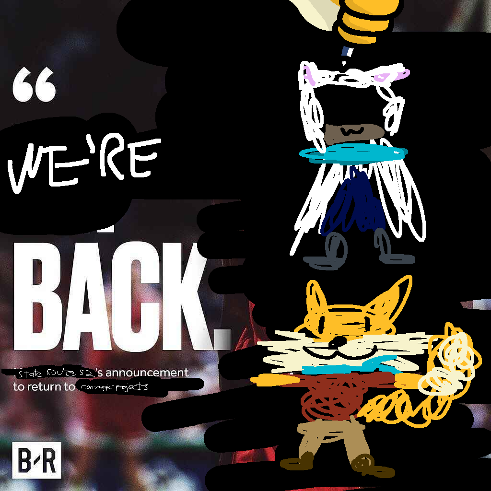

Boy, I sure did make that giant "End of 2025" post about all my grand plans to keep working on the game and then almost immediately disappeared for 3 months, huh. Well, for those of you who don't obsessively follow my every action, I moved! Across the country, in fact, which was a road trip but led me to no longer live in the Midwest: Half fitting, half very much not. I'm in Oregon now, and with the move being a huge upheaval to my life I had to take some time off from working on the game.
Now that I've settled in, I've got a job that I love and my apartment is more or less furnished, I took some time to evaluate where I was at with the game. Part of me in the back of my mind was wondering if I'd still have the motivation to make a game about the Midwest if I didn't live there any more. Truth be told, I had considered shelving the project for a bit and instead taking some time to work on a smaller project that I'd be able to actually released a finished version of sooner.
In the end, it was a piece of music that really re-sparked my drive to work on the game again. One of my coworkers has Venture Highway by America on the playlist he plays while we're doing setup for events. This is one of the most State Route 52-coded songs ever made, and every time I've heard it since then it's made me think about the game and how much, deep down, I really did want to keep working on it.
So, what's the plan from here? April is a very busy month for me with regards to work, so I can't promise a huge amount of progress. (MSE Survivor is also taking up some amount of my game dev free time right now, if you don't know what that is the details aren't important but it's a long-running game design competition.) Still, I'll try and at least have something to post every Friday, from this month through to the foreseeable future.
Thanks for understanding during the hiatus, and I hope you're looking forward to seeing more from the game!